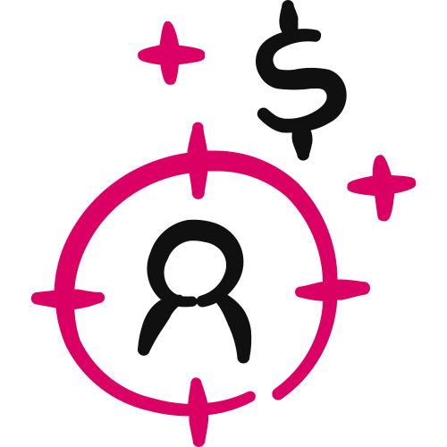

Money Magnet™ · Step 4 · The Sniper Close™ · Part 1 of 3
The Closes
How your event ends. There are four closes, one new one for each phase, and each asks the room for a different first yes.

You'll leave with the close that fits your phase. If it's The PASS™ Close, you'll also have your PASS™ Instrument: all nine Magic Formula™ steps calibrated and scored out of 45, ready for every session you run.
- Four closes, one new one per phase. ASK™ → JOIN™ → PASS™ → SEAL™, and the closes from earlier phases stay available. 03
- The ASK™ Close is the free application call. An application form and a calendar, and the sale happens on the call. 04
- The JOIN™ Close sells the membership from the room. Two prices in the room, then an enrollment call within days. 05
- The PASS™ Close sells a paid session, not the offer. The session does the selling. 06
- The SEAL™ Close takes a deposit on the full offer. Full price first, a non-refundable deposit, an onboarding call, and the balance before it starts. 08
- Two prompts run the PASS™. Calibrate your instrument once, then run a fresh chat for every session. 11
01
How Your Event Ends
A close is the way your Sniper Presentation™ ends: the one thing you ask the room to do.
There are four closes in these guides, one for each phase of the $100K Day Accelerator™: The ASK™ Close, The JOIN™ Close, The PASS™ Close and The SEAL™ Close.
They don't differ by how much money changes hands. They differ by where the conversation sits next to the sale. And every one of them ends on a call, so nobody finishes without a next step.
| Close | What you ask for | Where the conversation sits |
|---|---|---|
| The ASK™ Close | An application for a free call | On the call. The sale happens there. |
| The JOIN™ Close | Join the membership, from the room | After the sale, on an enrollment call. Buy, then talk. |
| The PASS™ Close | A booked, paid session | Before the sale. Talk, then buy. |
| The SEAL™ Close | A non-refundable deposit on the full offer | After the deposit, on an onboarding call. The balance is paid before it starts. |
One name, two meanings
The Sniper Close™ is the name of Step 4 as a whole. It's also the closing sequence inside your presentation.
It isn't a separate document. You write the close into your Sniper Presentation™ in Part 2. This chapter is about choosing the right one and knowing how it runs.
It isn't how much money changes hands. It's where the conversation sits relative to the sale.
02
Where It Fits
Everything in the Offer Matrix™ was you building the offer. Step 4 is where it finally meets an audience and turns into clients.
The closes are Part 1 of Step 4, The Sniper Close™, the first step of the Money Magnet™.
Figure 02 · The $100K Day Engine™. Three pillars, nine steps. The closes are Part 1 of Step 4.
The three parts of Step 4
| Part | What you build | What it gives you |
|---|---|---|
| 1 · You are here | The Closes | How your event ends, and the PASS™ tools for The PASS™ Close |
| 2 | The Sniper Presentation™ | The live pitch itself, written beat by beat through to the close |
| 3 | The Sniper Presentation™ Slides | The deck you present from |
What feeds in
Your Money Model sets your phase and your close, and your numbers: the session fee, the membership prices, the deposit and its terms.
Your Red Diamond Offer™ is the offer the close points at. Your Magic Formula™ becomes the instrument you diagnose with in a PASS™, and the system members get access to.
You make a great pitch, and the only thing on offer is a big decision nobody can make on the spot. The room goes quiet, you blame the audience, and nobody buys.
The right close gives them a first yes they can actually say today.
03
Pick Your Close
You don't guess this. Your Money Model already points to a close for your phase. You're mostly confirming it.
| Close | Phase | Validates | Offer | Goal |
|---|---|---|---|---|
| The ASK™ Close | 1 · Launch | Message | Membership Offer, on the call | First 3–5 paying clients |
| The JOIN™ Close | 2 · Execute | Offer | Membership Offer, from the room | $25K months |
| The PASS™ Close | 3 · Growth | Pitch | Accelerator Offer (~$10K–$15K) | $50K months |
| The SEAL™ Close | 4 · Mastery | Scale | Exclusivity Offer ($25K+) | $100K months |
Figure 03 · The ladder. ASK™ → JOIN™ → PASS™ → SEAL™. One new close per phase.
Each phase adds one new close, and the closes from earlier phases stay available. So in Phase 2 you still have The ASK™ Close alongside The JOIN™ Close. What doesn't change is what each close is.
You can switch to another close if you have a real reason. If you do, check that your Money Model math still holds.
Five words you'll see a lot
The application callThe free call The ASK™ Close sends people to. They apply with a form and book from a calendar, and the sale happens on the call. is where The ASK™ Close makes the sale.
A PASS™Paid Audit or Strategy Session. About an hour, one client. An Audit finds the gaps against your Magic Formula™; a Strategy session delivers an outcome. Either way, they leave with a written plan. is the session The PASS™ Close sends people to.
Your PASS™ InstrumentYour Magic Formula™ turned into nine diagnostics: a measure, questions and scoring anchors for every step. Built once, used in every session. is what you audit them against.
The enrollment callA short call with every new member, within days of joining from the room. Its first job is to get them started. The upsell comes from there. is what makes The JOIN™ Close stick.
The onboarding callThe call after the sale that gets a new client started. It follows The ASK™ Close and The SEAL™ Close. is the next step once they've said yes.
04
The ASK™ Close
The first close, for Phase 1, Launch. You invite the room to apply for a free call, and the sale happens on the call.
ASK™ stands for Ask · Share · Kickstart. It's the free application call: an application form, a calendar, and a call.
What it sells is your Membership Offer, on the call. Then comes the onboarding call, and the upsell from there.
Where it sits in the funnel
Phase 1 keeps it simple: a free micro event, run weekly, with no VIP and no upgrades, so nothing feels complicated. The funnel ends on your ASK™ page.
Figure 04 · The Phase 1 funnel. The thank-you page carries the bribe video, the survey and the community. The last page is the close.
The booking link is offered in the event or sent afterwards, from its own URL. It never sits on a thank-you or confirmation page.
When you've outgrown it
Graduate when, across one 28-day cycle, your landing page converts at 20% or more and you've collected 50–100 survey responses. Then you add The JOIN™ Close. The ASK™ Close stays available.
05
The JOIN™ Close
The Membership Close, for Phase 2, Execute. You ask the room to join your membership on the spot. Then you get on an enrollment call with every person who joined.
JOIN™ stands for Jumpstart · Onboard · Implement · Next Level. It's your first one-to-many close: the offer is made from the room.
That call isn't where the sale happens. The sale already happened. Its first job is to get them started, and the upsell to your Accelerator Offer comes from there.
Here's why it matters. A membership doesn't die from bad closing. It dies at the second payment, when someone who never got started sees money leave their account and cancels.
Your Membership Offer is the lowest entry: ongoing access, the easiest first yes, and the door to everything above it. It's not a consolation prize for people who wouldn't buy the big thing. It's a front door.
The ask, in four beats
- Name what they're joining. Not "my membership." Say its name and what being in it means: a room, a rhythm, and you.
- Give two ways to pay. Monthly gets the yes. Annual, at a 25% saving, keeps the member and brings the cash forward. Show both and let the saving persuade.
- Say what happens next. "When you join, you'll get a call from me in the next few days to get you set up." Say it in the ask, not after.
- Give the steps, then stop talking. Pick monthly or annual, join, done. Don't re-explain the prices.
Your actual prices come from your Money Model. Don't invent them on stage, and don't discount in the room because it went quiet. The annual saving is your discount.
The enrollment call
Book it within a few days of them joining. Twenty to thirty minutes is plenty.
- Welcome and reassure. Tell them they made a good call, and settle any buyer's remorse.
- Find out where they are. What made you join, and what do you want in the next 90 days?
- Point at ONE thing. Not the whole library. One first action, chosen for them.
- Get them into the room. Make sure they post or say hello in the community while you're with them.
- Book the next touchpoint. Never end the call without a specific next date in their diary.
Leading the call with the next offer before they've started. It tells them the membership wasn't the real offer.
Get them started first. The upsell to your Accelerator Offer comes from there.
Track how many join and how many are still there at payment three. Joins tell you the close works. Retention tells you the membership does.
Graduate when, across one 28-day cycle, 10% or more of your live attendees JOIN™ from the room. Then you add The PASS™ Close.
06
The PASS™ Close
Nobody buys in the room, and that's the point. You send them to a paid session, and the session does the selling.
PASS™ stands for Paid Audit or Strategy Session. It's the close for Phase 3, Growth, and it sells your Accelerator Offer (~$10K–$15K) through the session. An Audit finds the gaps; a Strategy session delivers an outcome. Either way, you upsell or downsell from it.
Instead of "buy this," you ask them to book a PASS™ with you. You're not booking a sales call. You're booking a diagnosis.
They sit with you for about an hour. You score their business against your Magic Formula™, show them where it's strong and where it's broken, and hand them a written plan. Then you ask one question: would you like my help?
What it is not
It's not a discovery call with a fancy name. A discovery call finds out if they can afford you. A PASS™ delivers an assessment they'd have paid for on its own.
It's not a pitch with an audit bolted on the front. You're genuinely diagnosing. If the honest answer is that they don't need you, that's the answer.
The ask, in four beats
- Name the session. Never "book a call." Use the shape [Timeline] + [Outcome] + [Session Type], like "90-Day Client Flow Mapping Session."
- State the fee, and where it goes. The number comes from your Money Model. It comes off their first payment if you work together, so nobody pays twice.
- Make the promise that removes the risk. They leave with a written plan whether they hire you or not. Say it out loud.
- Give the steps, then stop talking. Numbered, on screen, simple. Click, pick a time, pay, done. Then let the pause work.
"You'll leave with a scored assessment and a written plan. That's yours whether you work with me or not. And if we work together, the [fee] comes straight off your first payment."
Why it's paid
A free call is The ASK™ Close, the free application call from Phase 1. Same room, a different job.
A fee filters. People who pay show up ready and take the hour seriously.
The tell that you're ready to charge: you stop hoping they say yes and genuinely don't mind either way.
Graduate when, across one 28-day cycle, 15% or more of your live attendees book a PASS™. Then you add The SEAL™ Close.
07
Inside the PASS™
A PASS™ is about an hour. It has five beats, and they always run in this order.
The whole thing rests on one idea: you're not selling coaching, you're delivering a diagnosis.
The GoalAbout 5 minutes
Three questions. Where do you want to be in 90 days? Where are you now, on a scale of 1 to 10? What are the top two or three things in the way?
Write down their exact words. You'll use them at the end.
The Audit15–20 minutes
Nine steps, one question each. Score every step out of 5, for a total out of 45.
Capture only. They'll say something broken and you'll want to fix it. Don't. Say "got it," write it down and move on.
The trap: coaching during the audit. Every fix you hand over here is a reason not to hire you.
The Gap3–5 minutes
Now you talk. Give the total, say how many areas are solid and how many need work, and name the phase where the gaps cluster.
Tie it back to what they said in Beat 1. Finish on hope: these gaps are specific, and they're fixable.
The Plan25–35 minutes
This is the part they paid for. For every step scoring 3 or below, give a root cause, a recommendation and one piece of homework.
Steps scoring 4 or 5 get one sentence: that's solid, keep doing it.
Walking them through every fix, step by step, until they don't need you.
Direction, not delivery. Tell them where to go. The homework is real, doable and deliberately incomplete.
The Close3–5 minutes
Two questions and an ask. How confident are you that this plan gets you to [their goal] if it's done properly? How confident are you that you can do all of it on your own?
Then: "Would you like my help?" Stop talking and let the silence sit.
If they say yes, move straight into onboarding and credit the fee they paid. If they want to think, send the report today and follow up in a day or two. Don't discount and don't push.
The trap: filling the silence after the ask. If you start listing bonuses, you've answered your own question, and the answer was no.
How a session is scored
Each of the nine steps scores 1 to 5, so a session totals out of 45. The total gives the summary line in the client's report.
| Total | Reading |
|---|---|
| 40–45 | Strong foundation. The work is optimisation. |
| 30–39 | Solid progress. A few key gaps to close. |
| 20–29 | Mixed. Clear priorities needed. |
| Below 20 | Early stage. Foundational work first. |
The report: your promise, kept
You promised a written plan whether they hire you or not. Send it within the hour, every time, enrolled or not.
It holds their goal in their words, the full scorecard, every recommendation with its root cause and homework, and the three things to do first.
For a new client, it's your first deliverable. For someone who said no, it's your thinking sitting in their inbox when they're ready.
08
The SEAL™ Close
The Deposit Close, for Phase 4, Mastery. You make the full offer and ask the room to put a non-refundable deposit down against it, right there. No session before the sale.
SEAL™ stands for Secure · Engage · Activate · Launch. It sells your Exclusivity Offer ($25K+), with your Accelerator Offer alongside.
They pay the deposit, they're enrolled, and the rest follows on the terms you set. The deposit is the part of the price they pay now to hold their place, and it comes off the total.
This is the hardest close to earn and the simplest to run. It only works when everything upstream is already doing the persuading: a proven event, a proven offer and real results. You don't start here.
The ask, in four beats
- State the full price first. The whole number, out loud, before you mention the deposit. Lead with the deposit and it reads as a trick.
- Name the deposit and what it holds. The amount, that it comes off the total, and what it buys them: a real place, price or bonus.
- Say the terms plainly. When the balance is due (always before it starts), how it's paid, and that the deposit is non-refundable. In the room, never in small print.
- Give the steps, then stop talking. Pay the deposit, you're in, and your onboarding call is next. Nothing to soften it with.
Setting the deposit
$997 is the recommended default, and your own number comes from your Money Model. The shape that works is roughly 5–10% of the full price.
Too small and it stops filtering. Too big and it's just the price with extra steps.
What replaces the sales call
In this close, there's no session before the sale. The onboarding call comes after the deposit, to get them started. So the selling has to happen somewhere else.
- The presentation carries everything. Every objection a sales call would handle is raised and answered on stage.
- The proof is undeniable. Real numbers, real people, real results.
- The enrolment is flawless. An immediate confirmation with the terms, the balance date and what happens next.
- The urgency is real. Something is genuinely limited. Never manufacture it.
The trap: adding "or book a call if you'd rather chat" when the room goes quiet. If a conversation is what closes them, run The PASS™ Close on purpose, not as a rescue.
Graduate when you hit $100K months, 3 cycles in a row. Then you automate the multi-day event.
09
Before and After
Here's The PASS™ Close in action: one made-up coach, same event, a different ending.
"Book a free call if you want to chat." People book, half don't show, and each call is spent guessing at problems and steering toward the program. Nobody buys.
- Named: a real session, not "a call"
- Priced: a fee that comes off the first payment
- Promised: a written plan either way
- Run: nine steps scored, gaps named, two questions asked
"Would you like my help?"
Figure 09 · Same coach, same offer. An illustrative example: it shows the shape, not a real client or a guaranteed result.
The offer never changed. The ask did, and so did who turned up to the conversation.
10
The Hard Rules
These are the lines each close lives or dies on.
- Your numbers are yours. Every fee, price, deposit and term comes from your Money Model. Never quote someone else's.
- Every close ends on a call. The application call, the enrollment call, the PASS™ Session or the onboarding call. Nobody finishes without a next step.
- Every close: give the steps, then silence. Don't improvise the close and don't fill the pause.
- ASK™: a calendar in every funnel, never in the flow. The booking link is offered in the event or sent afterwards, from its own URL, never on a thank-you or confirmation page.
- JOIN™: always both prices, and promise the enrollment call in the ask.
- JOIN™: get them started first on the enrollment call. One next action and a booked next date. The upsell comes from there.
- PASS™: name the session, never "a call." And the fee always comes off the first payment.
- PASS™: they leave with a plan either way. Send the report within the hour, every session.
- PASS™: capture only during the audit. Direction, not delivery, in the plan.
- SEAL™: full price first, deposit second. It always comes off the total.
- SEAL™: say non-refundable out loud, confirm every payment immediately, and take the balance before it starts.
- SEAL™: real scarcity only, and earn it first. No sales call before the deposit. The onboarding call comes after it.
11
Build Your PASS™ Tools
If your close is The PASS™ Close, two prompts run your PASS™. You use the first one once and the second one every session.
Running The ASK™, JOIN™ or SEAL™ Close? There's nothing to build here. Your close gets written into your Sniper Presentation™ in Part 2.
The PASS™ Calibration Builder
Run it once. It turns your Magic Formula™ into your PASS™ Instrument: for each of your nine steps, a Step Currency, the questions you'd ask out loud and what a 5 and a 1 look like. You're the expert. It organises and pushes when an answer is too fuzzy to score.
Paste the whole prompt as it is. The length is instructions for the AI, not work for you.
- Copy the prompt. Use the button above, or download the file.
- Open a new chat. In Claude, start it inside your $100K Day AI Workspace project so it can read your Magic Formula™. ChatGPT works too.
- Paste it and send. It explains the PASS™ Instrument and asks for your Magic Formula™. Check: that's the only thing it asks for, and then it waits.
- Answer one question at a time. It echoes your Magic Formula™ back for you to confirm, explains a Step Currency once, then calibrates all nine steps one per turn: the currency, objective or subjective, the questions, the anchors.
- Review it, then finalise. Read the full Instrument like you'll use it tomorrow. Every question should sound like something you'd say. Check: all eight Ready Check points pass.
- Save it. In your AI Workspace it goes in Client Engine › Money Magnet › pass-instrument, as
pass-instrument.md.
The PASS™ Session Builder
Run it live, on every session. It's your scribe and your prompter: it tells you what to ask, captures what your client says, holds the scores and writes their report at the end. The recommendations are yours. It never writes, suggests or hints at them.
One session per chat, so each client's data stays clean. Build your PASS™ Instrument first.
- Copy the prompt. Do this before each session, while your client hasn't joined yet.
- Open a fresh chat. In Claude, start it inside your $100K Day AI Workspace project so it can read your PASS™ Instrument. ChatGPT works too.
- Paste it and send. It asks for your PASS™ Instrument. Check: it replies "Instrument loaded. 9 steps across 3 phases."
- Set up in the Green Room. Four quick answers: your client's first name, the offer and its price, what they paid for the session, and the session's name. Then read the short primer.
- Run the five beats live. The Goal, The Audit, The Gap, The Plan, The Close. You ask, listen and type. It keeps you on track and holds the running total.
- Send the report within the hour. It writes a standalone HTML report in your brand, with no Coach Launch names on it. Save it in pass-instrument › sessions as
<client-name>-<date>.html.
After about ten sessions, go back to the Calibration Builder and sharpen any question that got vague answers. Then bump your Instrument's version.
12
Check Your Work
Most closes fail in one of these ways. Check yours against each one.
The booking link dropped into the funnel flow, on a thank-you or confirmation page.
Offered in the event or sent afterwards. A calendar in every funnel, never in the flow.
"It's only a small amount, just to cover my time…" Now they think it isn't worth it.
The fee, what they get, and that it comes off the first payment. Then move on.
"How's your content going?" You can't score "alright, I think."
"How many qualified leads did you get last week?" Calibrate before your first session.
They didn't buy, so you skip it. You've broken the one promise that justified the ask.
The ones who didn't buy today are exactly who it's for.
Lots of people joined and you're tired. Then half cancel at payment two.
Shorten them or run small groups if you must, but don't replace them.
A cold room, no results yet, and a deposit sight unseen. Nobody moves.
Run the close for your phase while you build proof. SEAL™ is the top of the ladder.
Discovered later, it feels like a betrayal.
Stated plainly, as a normal part of the terms, it's fair.
Is it ready?
No score out of 25 here. Each close has a pass or fail check. Run the one for your close.
The ASK™ Close
- Your application form and calendar are ready, and the sale happens on the call.
- The booking link is offered in the event or sent afterwards, from its own URL, never on a thank-you or confirmation page.
- Your Membership Offer is ready to sell on the call, with the onboarding call after it.
The JOIN™ Close
- It has a name, and two prices from your Money Model with a real annual saving.
- The enrollment call is promised in the ask, and you can book every new member within days.
- You know the ONE thing a new member does first, and the next touchpoint to book them onto.
- You track who's still there at payment three, and the upsell comes only after they've started.
The PASS™ Close
- Your session has a real name and a fee from your Money Model.
- The fee comes off the first payment, and you say so in the ask.
- They leave with a written plan whether they buy or not.
- All nine Magic Formula™ steps have a measure, questions and anchors.
- You can hold the audit to capture only, and you have the two questions and the ask word for word.
- You can send the report within the hour.
The SEAL™ Close
- Your event and offer are proven, with real results to show.
- Full price, deposit and balance terms are set in your Money Model, with the deposit around 5–10%.
- Non-refundable is said out loud, and the deposit comes off the total.
- The deposit holds something real, and your presentation answers everything a sales call would have.
- Every payment gets an immediate confirmation with the terms, the balance date (before it starts) and the onboarding call.
13
Your Action Items
Tick these off as you go. Your ticks stay in this browser, and when they're all done the contents marks this chapter complete.
Resources for this chapter
Next, in The Sniper Presentation™, you write the live pitch that ends in your close.
The best close doesn't feel like a close at all. Pick the ask your room can say yes to today, tell the truth about the terms, then ask and let it sit.
Coach Launch Academy™
Ready to Build Your $100K Day Masterclass
The ultimate one-to-many client acquisition system
Use the PASS™ Calibration Builder tool in Coach Launch Academy™ to build yours with AI-guided tools and premium one-on-one consulting & coaching.
Last updated 2026-11-12